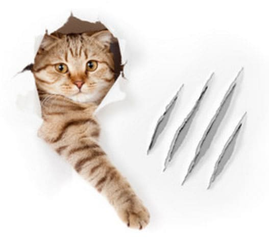
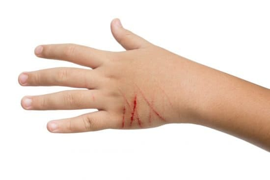

Болезнь кошачьей царапины, также известная как «кошачья лихорадка», — бактериальная инфекция, которой люди заражаются от кошек. В США происходит около 20 000 случаев болезни кошачьей царапины ежегодно.
СИМПТОМЫ
Подсказать, что у ребенка болезнь кошачьей царапины, могут:
• сведения, что ребенка недавно оцарапала или укусила кошка;
• пузырь или маленький безболезненный синяк, появившийся на месте царапины или укуса спустя несколько дней;
• один-два соседних лимфоузла становятся болезненными и увеличиваются через несколько недель после царапины или укуса. Наиболее вероятно вовлечение лимфоузлов, расположенных в области локтевого сгиба, в подмышечной впадине, на шее, в паху. Увеличение может сохраняться до 4 месяцев;
• повышение температуры тела, обычно не очень сильно;
• утомляемость;
• головная боль;
• снижение аппетита;
• в редких случаях поражаются внутренние органы: печень, селезенка, легкие;
• чрезвычайно редко развивается воспаление головного мозга, приводящее к формированию судорожных приступов.
ПРИЧИНЫ
Болезнь кошачьей царапины вызывают бактерии Bartonella henselae. Между кошками эти бактерии передаются с блохами. Кошки-носители этих бактерий не болеют, и у них не бывает никаких признаков инфекции. Бактерии длительное время — месяцами — живут в слюне кошки. Если такая кошка укусит или поцарапает человека, то он заразится болезнью кошачьей царапины. Она не передается от человека к человеку, но члены семьи могут заражаться от одной кошки.

ЛЕЧЕНИЕ
Врач проанализирует историю болезни и проведет осмотр. При подозрении на болезнь кошачьей царапины он назначит курс антибиотиков. Как правило, этого достаточно для укорочения длительности заболевания и облегчения симптомов. Очень редко случается, что лимфатические узлы воспаляются и увеличиваются настолько, что их надо дренировать с помощью операции. Чтобы подтвердить диагноз болезни кошачьей царапины или исключить другие причины увеличения лимфоузлов, врач может сделать их пункцию (или биопсию) и/или анализы крови. Уменьшить интенсивность боли помогают противовоспалительные препараты — ибупрофен или ацетаминофен.
Если, несмотря на прием антибиотика, у ребенка повышается температура, лимфатические узлы увеличиваются и болезненны, снова обратитесь к врачу.
Здоровье ребенка от докторов Сирс / Сирс У. и др.